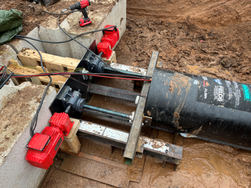
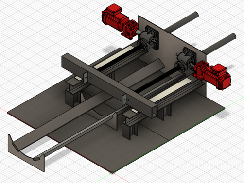
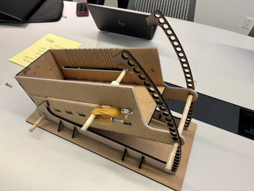
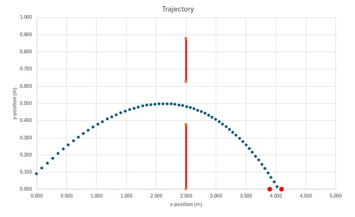
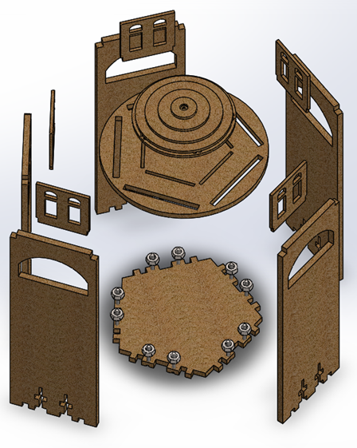
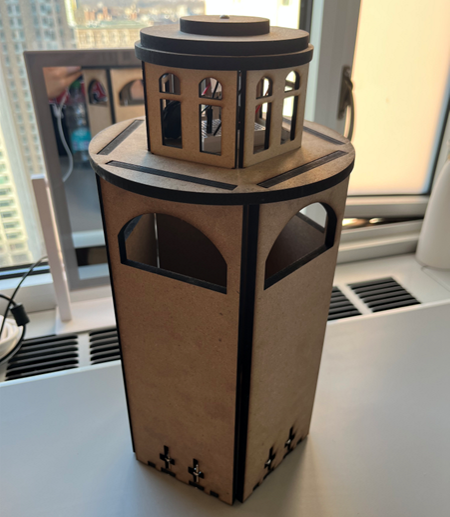
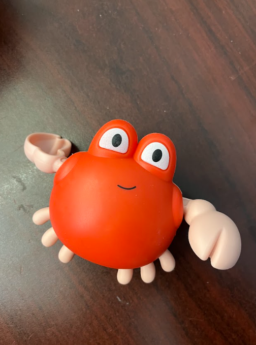
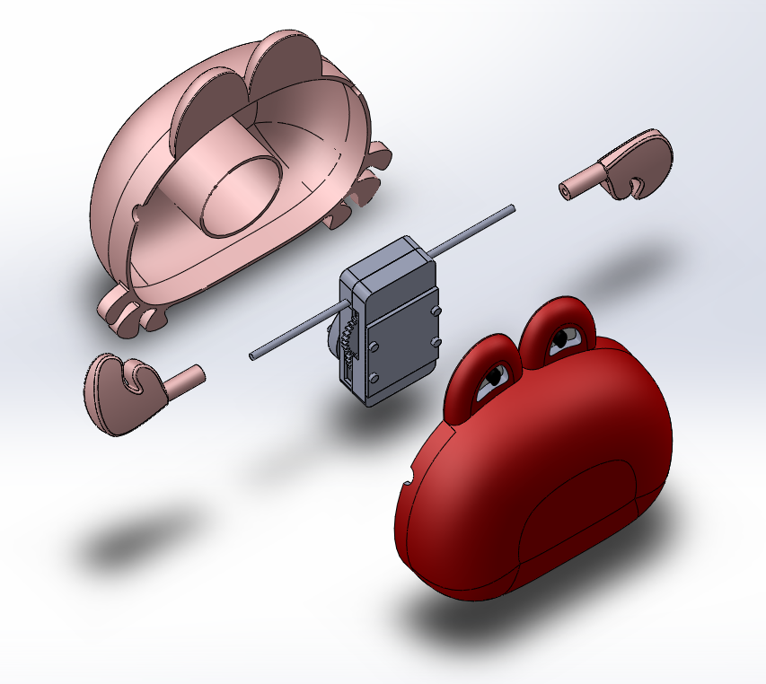
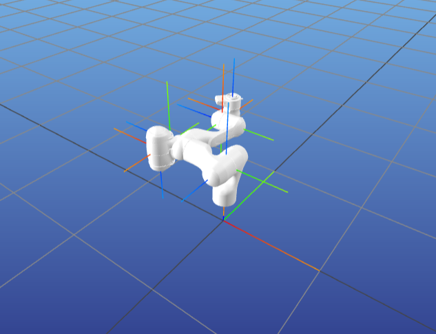
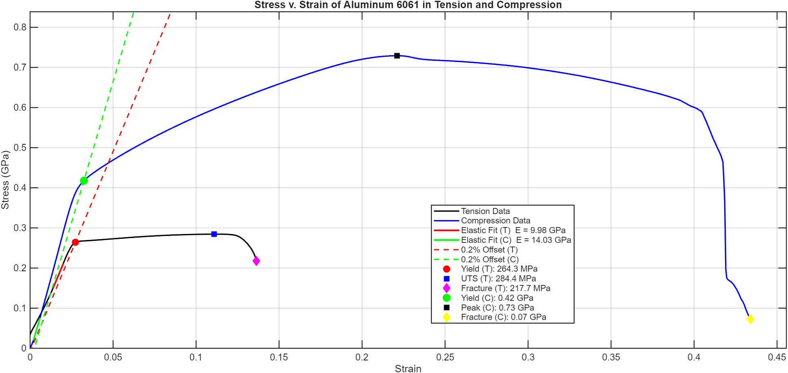

Keenan Heinz
Mechanical Engineering, University of Pennsylvania, Class of 2028
Mechanical engineering student and D1 athlete at the University of Pennsylvania.
- Intended concentration in Structures and Materials
- First-principles-based methodology
- World Championship medalist
- Multiple-time IRA National Championship appearances
Automated Test Instrumentation
Owned mechanical, electrical, and software scope for a fleet of automated test rigs at a stealth startup, from design criteria through fabrication-ready documentation.
- 500+ line design spreadsheets: criteria, BOMs, hand calculations
- Fastener and structural calculations to a 2.0 yield safety factor for a 50 kg max working load
- Wiring and control stacks: STM32, ADC, load cells
- Non-contact optical extensometer design and integration
- SPI-based DAQ software
Coil Winding System
Designing custom bobbins, a tensioning system, and HMI-integrated software for an ITC-PLC-70 coil winding machine, with test winding to validate scalability for future production.
- Custom bobbin design
- Tensioning system design
- Software linking coil requirement parameters to the machine's HMI settings
- Test winding to validate scalability for future production
No-Diggity V3 Launch Structure
Engineered and fabricated the A36 steel launch structure for Penn Hyperloop's tunnel boring machine, from hand calculations through final weld.
- Rated for 2,500+ N vertical, 2.7+ kN torque
- Structural hand calculations to size the design
- Fully MIG-welded by hand


Styrofoam Ball Launcher
Built an adjustable rubber-band-powered ball launcher, and the physics model to predict how it would behave.
- Variable distance, height, and ball mass
- Kinematics and energy model, including drag and losses
- Calibrated against test data


Lighthouse Lamp
Rapid-prototyped a lighthouse structure using groove-and-alignment joints instead of glue or fasteners.
- Rapid-prototyped laser-cut design
- No permanent joints or fasteners
- CR2032 tilt-switch circuit, wired to a 10mm LED


Toy Dissection
Measured and reverse-engineered a small spinning toy into an accurate CAD model.
- Precise physical measurement
- Dimensional accuracy, part-to-part alignment
- Exploded views and technical drawings


Plotting and Coding
Wrote automation scripts and simulation tools that became direct building blocks for later DAQ software work.
- Materials and thermal data: automation and visualization
- Rigid-body dynamics via high-order ODE integration
- Real-time multi-body visualizer

